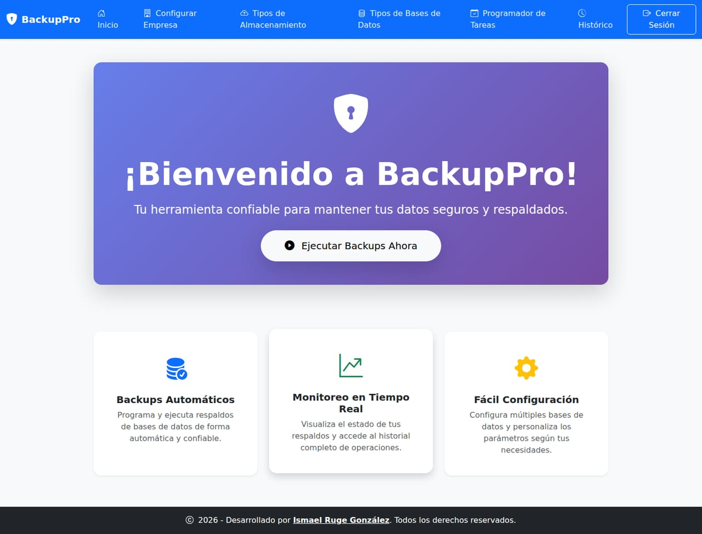

Software para tu operación
Centraliza ventas, inventario, citas o tareas internas en una aplicación adaptada a la forma en que trabaja tu negocio.
- Aplicaciones web a medida
- Paneles de gestión y administración
- Automatización de procesos
Ingeniería de software · Colombia / Remoto
Soy Ismael Ruge, ingeniero de sistemas y desarrollador senior. Creo software a medida, conecto sistemas y convierto procesos complejos en herramientas útiles para tu equipo.
¿Buscas talento para tu equipo? Conoce mi experiencia

01 / CÓMO PUEDO AYUDARTE
Desde una web para presentar tu negocio hasta el sistema que sostiene tu operación.
Centraliza ventas, inventario, citas o tareas internas en una aplicación adaptada a la forma en que trabaja tu negocio.
Conecta aplicaciones, bases de datos y servicios para que la información llegue donde se necesita, con trazabilidad.
Presenta tus servicios con claridad y facilita que tus próximos clientes te encuentren, conozcan tu trabajo y te contacten.
02 / TRABAJO SELECCIONADO
Explora el problema, las decisiones técnicas y el resultado de cada proyecto.

PROYECTO DESTACADO · CÓDIGO ABIERTO
Las copias de seguridad, bajo control.
Una aplicación para centralizar y programar respaldos de bases de datos hacia distintos destinos de almacenamiento. De proyecto de grado a una herramienta en evolución.

APLICACIÓN DE GESTIÓN · CÓDIGO PRIVADO
Citas, clientes, inventario y ventas en un mismo lugar. Un sistema para organizar el día a día de un centro de estética.
Conocer la solución
DISEÑO WEB · DEMO COMERCIAL
Una muestra de cómo presentar un negocio de belleza, comunicar sus servicios y facilitar el contacto para agendar una cita.
App Android para tiendas de abarrotes. Inventario y ventas con OCR, escaneo de códigos de barras y reconocimiento de voz.
Kotlin · Proyecto privado03 / EXPERIENCIA QUE APORTO A TU EQUIPO
Desarrollador Senior Backend / Fullstack
Diciembre 2023 — Actualidad · Remoto
Lidero el desarrollo de un sistema de gestión de casos y resultados de patología, con decisiones de arquitectura y coordinación técnica.
Desarrollador Backend / Fullstack
Marzo 2022 — Diciembre 2023 · Duitama
Desarrollo de soluciones administrativas, contables y tributarias para entes gubernamentales, desde interfaces web hasta servicios backend y configuración de servidores.
04 / FORMA DE TRABAJAR
Una conversación clara desde el inicio para tomar mejores decisiones durante el desarrollo.
Conversamos sobre tu operación, las personas que usarán la solución y el problema que vale la pena resolver.
Acordamos prioridades, funcionalidades y entregables para tener una dirección compartida.
Desarrollamos por etapas, revisamos los avances y validamos la solución con escenarios de uso reales.
05 / UN POCO SOBRE MÍ
Soy Ismael, ingeniero de sistemas en Yopal, Colombia. Me interesa entender cómo funciona un negocio y construir herramientas que hagan su trabajo más sencillo.
Mi experiencia en el sector salud me ha llevado a trabajar con interoperabilidad, información crítica y sistemas en producción. Busco aportar ese criterio a nuevos proyectos y equipos.
Me motiva seguir creciendo en liderazgo técnico, compartir lo que aprendo y trabajar con personas que valoran la calidad y la comunicación.
FORMACIÓN
Corporación Universitaria Remington
Graduado · Promedio 4.20 / 5.0Ver proyecto de gradoAPRENDIZAJE CONTINUO
Formación en .NET, arquitectura, bases de datos, desarrollo web y liderazgo.
Ver formación en PlatziHERRAMIENTAS CON LAS QUE CONSTRUYO
EL SIGUIENTE PASO
Cuéntame sobre tu negocio, una idea que quieras desarrollar o una oportunidad en tu equipo.
ismaelruge@gmail.comYopal, Colombia · Colaboración remota